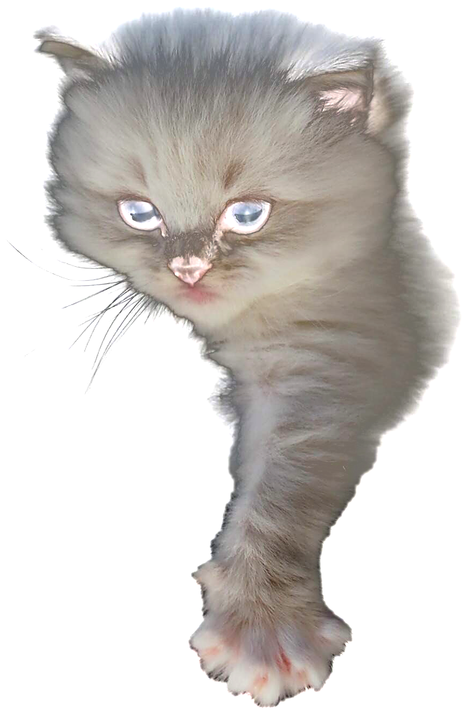

Aktuální dostupnost koťátek
Vrhy, barvy a termíny odběru — přehledně na jednom místě.
Zobrazit koťátkaJemná povaha, modré oči, důkladná socializace. Vyrůstají u nás doma — mezi lidmi a dětmi.


Chovatelská stanice StElli
Jsme malá rodinná chovatelská stanice plemene Ragdoll. Pojmenovali jsme ji podle našich dvou malých spoluchovatelek — Stelly a Elleny. Všechny naše kočky žijí s námi v celém domě, ne v kotcích, a jsou od prvního dne součástí rodiny.
Naším cílem je odchovat plně socializovaná koťátka s důrazem na zdraví, vzhled a povahu.
Více o násNaše vrhy
Nenechte své nové koťátko čekat a prohlédněte si naše aktuální i minulé vrhy včetně dostupnosti.
Prohlédnout vrhy


„Věřím, že jsme schopní vychovávat plně socializovaná koťátka s důrazem na zdraví, vzhled a povahu.“
Petra Vávrová — zakladatelka chovatelské stanice StElli

Naše zásady
Jsme rodinná chovatelská stanice, které opravdu záleží na tom, aby každé koťátko dostalo maximální péči a lásku už od prvních okamžiků svého života.
Nahlédněte k nám
Vrhy, barvy a termíny odběru — přehledně na jednom místě.
Zobrazit koťátka
Genetické testy, veterinární péče a socializace — tři pilíře našeho chovu.
Jak chováme
Fotky z našeho každodenního života s kočkami a koťátky.
Do galerie